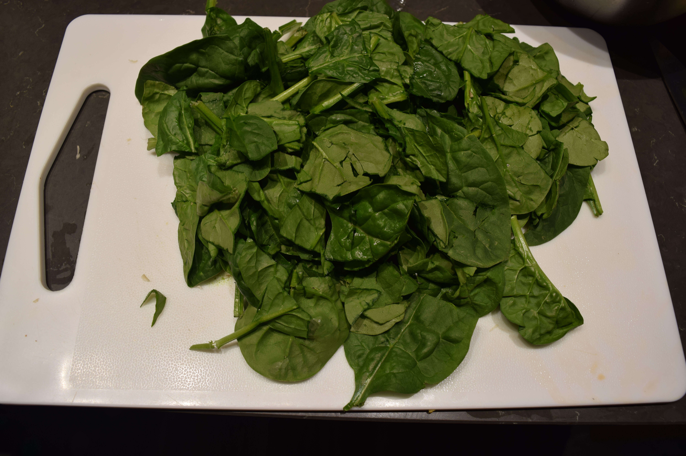

Vitamins and Minerals
Cooking and Nutrition
Vegetables contain a wide variety of important nutrients that are either difficult, or impossible to obtain through the consumption of other foods. However, accessing these precious vitamins, phytochemicals, and antioxidants is more difficult than you might think. From the moment they are harvested to the second they are eaten, the nutrients present within vegetables are constantly degrading.
To prevent this, some things you can do are:
- Buy produce locally, so it doesn't need to travel for long.
- Don't store vegetables for long periods of time, before or after cooking.
- Don't peel your vegetables when possible, as they both keep nutrients in the vegatable as it cooks, and contain nutrients themselves. (Petre, 2023)
One of the biggest sources of nutrient degradation is the cooking process. While heat tends to break down nutrients in general, how you choose to cook your vegetables will have a major impact on their final nutrional content. Vitamins can be split up into 2 types, water-soluble (Vitamins C and B), and fat-soluble (Vitamins A, D, E and K). As vegetables cook, they lose water which results in the loss of these water-soluble vitamins. Additionally, cooking vegetables in water can cause vitamins to leach out into the cooking liquid. The more water that you use in cooking, and the longer you let your vegetables cook for, the more and more nutrients will escape from your food.
With that being said, the first cooking method that comes to mind is likely boiling. Boiling results in losses upwards of 50% of vitamin C, minerals, and antioxidants, but only if the cooking liquid is not consumed. This means that things like soups and stews will retain the nutritional content of the vegetables you put into them. Another method of cooking vegetables that primarily uses water is steaming. Steaming actually does an extremely good job of preserving nutrients, only resulting in in a loss of about 9-15%. On the opposite end of the spectrum, methods like baking or roasting which only use dry heat also conserve a high percentage of vitamins. Sauteeing or stir-frying vegetables have a similar result, with the addition of fat or oil helping to improve the absorption of some antioxidants and phytochemicals. Lastly, while not exactly traditional, a microwave has very similar effects to those of the oven or stove, resulting in a Vitamin C loss of about 20-30% (Spritzler, 2019). At this point, you might be wondering if cooking vegetables is even worth it. While heat might lead to a loss of phytochemicals and vitamins, it also can make it much easier for our bodies to digest and absorb nutrients. For example, cooking vegetables often results in a large increase of the availability of antioxidants. Whether or not it is healthier to eat a vegetable raw or cooked is largely dependent on the vegetable in question. Foods like brocolli, cabbage, and onions all contain important compounds that get destroyed during cooking. On the other hand, asparagus, carrots, spinach, and tomatoes all benefit from being cooked. (Bell, 2017)
That being said, cooking isn't purely about nutrition. For many people, taste, convenience, and ease are all equally as important, if not more so.
One of my favourite vegetables is cauliflower, largely because of the factors above, as well as it's versatility as an ingredient. Nutritionally,
cauliflower is also rich in fiber, vitamins C and K, antioxidants, and essential nutrients like choline and folate. (Elliot, 2023) I will be preparing cauliflower with 3 different methods,
and judging them to determine my favourite one.
The first step before cooking any vegetable is cleaning and preparing it. While not as simple as brocolli, Cauliflower is still quite easy to break down.
First, flip it upside down and use a large knife to remove the bottom core. From here you can use your hands to pick off any small leaves and break apart the head into
smaller florets, and then wash the pieces thouroughly.


My first method will be oven roasting. After breaking apart the cauliflower, lay them out on parchment paper and season with olive oil,
salt, pepper, paprika, onion powder, garlic powder, and oregano. Laying the pieces on their flat side will let them gain a delicious golden layer
as they cook. Let cauliflower roast at 425f for about 15-20 minutes for smaller florets, and 20-25 for larger ones.


My next method is boiling. Bring a pot of salted water to a boil, adding some bay leaves or lemon juice. This will get rid of
the weird smell that usually comes with boiling cauliflower. From here, add your florets and boil until tender approximately 5-10 min.

Lastly, steaming. Bring water to boil in a large steamer, then steam for 5-10 min.

To make things a bit more fair, I seasoned the boiled and steamed cauliflower with some salt and pepper. However, I still
think roasting is my favourite method out of the three tried. Not only does the roasted cauliflower taste better by a large margin,
but I also find it easier to do while I'm making other things. Not only can I just bake multiple things at the same time for a 1 sheet dinner,
but the longer cook time actually makes it so I have the time to do something else while it cooks.

Dealing with Deficits
| Food | Iron Content | Vitamin D content |
|---|---|---|
| Beef Liver | 17.9mg/100g | 50 IU/100g |
| Spinach | 2.7mg/100g | 0 IU/100g |
| Oyster Mushroom | 1.33mg/100g | 2.8 IU/100g |
All values taken from the USDA's FoodData Central Database
I decided to put these 3 ingredients together in a congee. Congee is a form of Chinese rice porridge that is often lauded in traditional Chinese medicine for it's health benefits and nutrition. It's one of those foods that can be pretty much eaten at any time, and that you can pretty much throw anything in to. While liver congee is usually made with chicken or pork liver, I'll be using beef for it's much higher vitamin D and iron content.
Beef Liver Congee
Makes 6 servings
- 1 cup jasmine rice
- 9-11 cups water or broth
- 600 g beef liver
- 2 cups milk or buttermilk
- 1 tablespoon soy sauce
- 1 tablespoon rice cooking wine
- 3 medium oyster mushrooms
- 1/2 bag or 100 g of spinach
- 2 medium carrots
- 2 cloves garlic
- 1 3-4 cm long piece ginger
- 2-3 green onions
- Salt to taste
- White pepper to taste
- Beef liver isn't exactly a popular choice because it has a tendency to taste really metallic or bitter. To prevent this, rinse with water, then cover the liver with milk. Let soak for approximately 1-2 hours.
- After the soaking is done, rinse off the milk and slice the liver into thin pieces. At this point, it should have lost a lot of it's red color. Combine with the soy sauce and cooking wine and let marinate for 30 minutes.
- Next, wash your rice by covering with water, swirling until cloudy, and then draining. Repeat until clear, approx. 2-3 times.
- Bring rice and water/broth to a boil, and simmer for 20 minutes. Using broth versus water, and the amount of liquid you choose to use are both up to you. Less will result in a thicker congee, and more will result in a runnier one. I used 9 cups of liquid. Using broth gives more flavor, and depending on the broth can also provide more nutrients, but it really is up to you. I used about 50:50 of chicken broth and water.
- While waiting for the rice to cook and liver to marinate, prepare your vegetables. For the garlic, simply peel and mince or chop. Next either peel or rinse the ginger thouroughly, then cut into thin slices. Lastly, remove any bruised layers of the green onion, then chop horizontally into thin pieces.
- For the carrots, rinse and then optionally peel them. I opted to not peel them to retain the nutrients in the peel. If you are not peeling your carrots, then make sure to rinse them extremely well to avoid any dirty taste. From here you can choose to either grate or thinly slice your carrots. To prepare the mushrooms, I washed them, removed the bottoms, then cut in half, then into thin slices.
- Lastly, rinse and roughly chop the spinach.
- After the first 20 minutes have passed, add in the carrots, garlic, and ginger. Let simmer for 20 more minutes, after which you can stir in the beef live and oyster mushrooms. Simmer 5 more minutes before stirring in the spinach. Let the congee simmer for 5 final minutes before seasoning to taste, adding the chopped green onions and serving.
- You can also add things like cilantro or sesame oil for garnish





References
Spritzler, F. (2019, November 7). How cooking affects the nutrient content of foods. Healthline.
https://www.healthline.com/nutrition/cooking-nutrient-content
Petre, A. (2023, June 23). Should you peel your fruits and vegetables?. Healthline.
https://www.healthline.com/nutrition/peeling-fruits-veggies
Bell, B. (2017, January 24). Is raw food healthier than cooked food?. Healthline.
https://www.healthline.com/nutrition/raw-food-vs-cooked-food
Elliott, B. (2023, February 8). The top 8 health benefits of cauliflower. Healthline.
https://www.healthline.com/nutrition/benefits-of-cauliflower
FoodData Central. U.S Department of Agriculture. https://fdc.nal.usda.gov/fdc-app.html#/